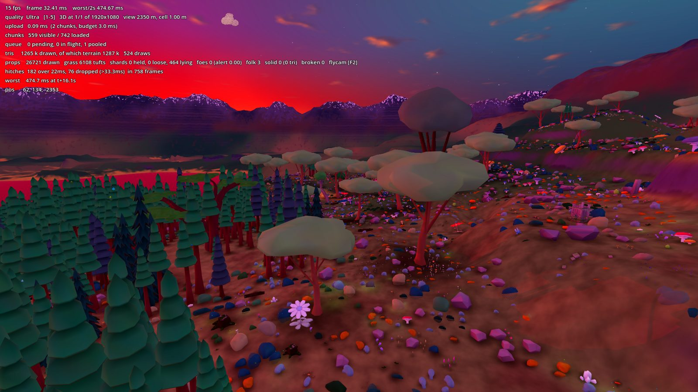
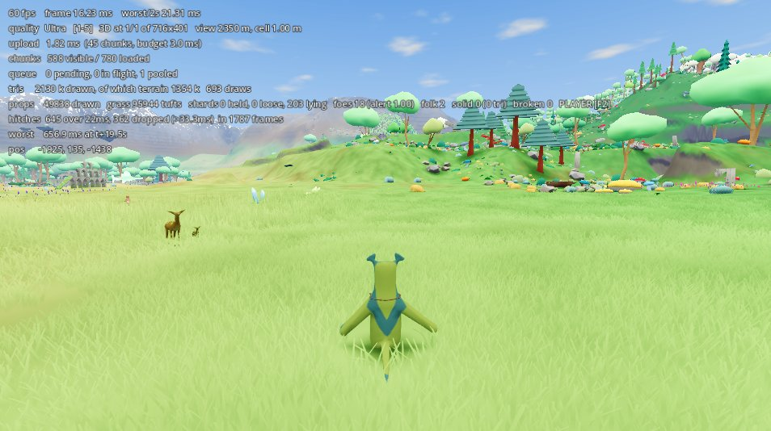

Most recently I was the only developer on a client’s store admin platform at JAIK Solutions: the React frontend, the Node API, and the hookup to the live store’s existing SQL Server database. On my own time I build game engines, procedural creatures, and AI tools I actually use.
React / Node.jsAzure / SQL Server / Cosmos DBPython / local modelsC# / GodotC++ / Vulkan
Work
01 / JAIK Solutions
JAIK Solutions · March–October 2026
The only developer on a store admin platform.
In June 2026 I took over a React prototype that ran on mock data. By October I’d rebuilt most of the frontend and written nearly all of the backend: a Node API on Azure Functions, a Cosmos DB data layer, and a publish path into the SQL Server tables the live storefront reads.
The work I’m proudest of was finding bugs nobody knew were there. A Cosmos DB setting was silently breaking every save. A permission check was inverted. And when the database went down, the deployed app quietly served fake demo data instead of failing. I fixed all three.
NetSuite → SQL catalog data Existing infrastructure. Integrated workflows. Client code and data remain private.
66API endpoints
~780Jest tests in the app
~555of my commits, June to October
An agent kit for the team.
I kept seeing the same mistake: AI-written code that says it worked when it didn’t, and mock data that hung around long after it should have been replaced. So I wrote the team’s agent instructions, reusable skills, and Playwright QA checks to catch it.
AI-assisted development Playwright QA
Games and projects
02 / Mostly games

Personal project · Godot, C# · In development
Mended Strands
My main game right now: an endless procedural collect-a-thon in the spirit of Battle for Bikini Bottom and Mario 64. There are no mesh files in it. The terrain, trees, creatures, characters, and their markings are all generated by code.
Creatures come from Bough, a branching body description. One description generates the mesh, skeleton, hitboxes, animation, and coat, so they can’t drift out of sync. I drew the joint rules out by hand before any of it was code. Every world has its own palette, so the same animal comes out in different colors depending on where you find it.
A dire wolf through the pipeline: raw mesh, smoothed, bones, hitboxes.

Hollowreach in play, with heart horses in the grass and aqueduct ruins in the distance. Stats on.
01
Fetch
A browser game I wrote for lomp.ai at VectorNW. No canvas and no engine: it’s all HTML and CSS, including pixel-perfect collisions. The dog has drag, friction, and a skid. Pickups only check a precomputed circle of nearby grid tiles instead of every bone on screen.
An RPG where a language model is the game master but can’t cheat. It can only act through validated tools, and plain code decides what actually happens. LLMs are bad at bookkeeping and good at storytelling, so each side does its own job.
A voxel game on my own Vulkan engine. Creatures come from a skeleton that generates their surface, and the same math gives every vertex its skin weights, so the mesh and the rig always match.
A coding agent that can spawn a tree of subagents, with limits at every level. Sessions can message each other without scrambling the order of their tool calls. I still haven’t found a good reason to launch a thousand of them.
A voice-driven coding agent for people who don’t use a terminal or a mouse. You talk, it edits files, runs commands, and drives a browser, and it ships with desktop installers.
Nanders. A neural network where every neuron is a single bit and each layer just NANDs with the one behind it. It didn’t work, but I had to know.
A 70M novelist. I trained a tiny model on public-domain classic novels for 12 hours. Perfect grammar, no idea what anything meant. Characters switched from “he” to “she” mid-sentence.
Surfer Pi. A 2B model on an old Raspberry Pi with a push-to-talk button, fine-tuned to talk like a surfer.
Cat toy. Arduino, motor driver, and a telescoping rod. An agent designed the parts from my specs and sliced them for my 3D printer. My cats went crazy for it.
I’m a developer in Spokane. I finished my BAS in DevOps Engineering at Spokane Community College in June 2026. Before JAIK I taught guitar at Rock School NW, to students from seven years old to their sixties.
I live on Linux, run my own models on a 48 GB VRAM workstation at home, and do my best work when someone hands me a messy problem and trusts me to figure it out. I’m looking for a developer job in Spokane or remote.